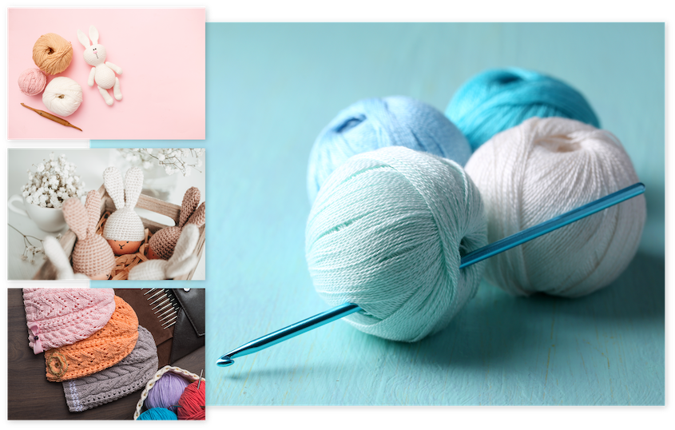
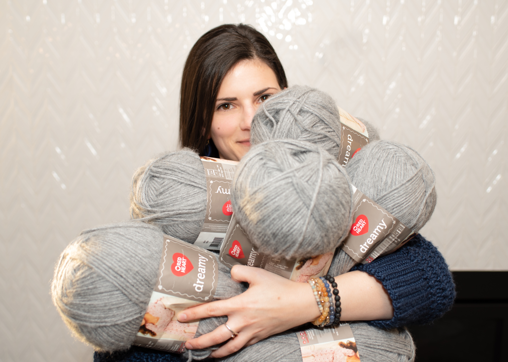

For the love of crochet
Amanda Arts designs crochet patterns that look boutique and wear every day. At Creative Arts Crochet you’ll find clean, modern silhouettes—cardis, shawls, and hats—that finish beautifully without the drama. Patterns are plain-English, size-inclusive, and sprinkled with smart tips to avoid frogging. Browse best-sellers on Etsy and Ravelry, peek behind the scenes on Instagram @creativeartscrochet, and join the list for tester calls and early discounts.


About Me
Amanda Arts is a pattern designer and tireless tinkerer who started Creative Arts Crochet to close the gap between pretty photos and practical instructions. Her process is part math, part cozy: sketch, swatch, refine, then grade across sizes before handing designs to detail-loving testers. The result? Approachable patterns with clean shaping, sensible yardage, and finishes that sit right on real bodies. Expect timeless textures, neat edges, and one smart trick per make—enough to learn, never to derail your evening.
Testimonials
Gallery
Kind words from makers and testers who’ve stitched the patterns.
Recent snaps from Instagram — works-in-progress, finishes, and fiber joy.
“I immediately loved the colors and am intending on using the crochet as a Mandala. The crochet is expertly worked which makes this piece even more beautiful. I am very happy with my purchase and would not hesitate to purchase again from this shop. The seller/maker is wonderfully helpful, as well, making this transaction just perfect. Thank you!”
— woodrow
“Brilliant pattern. Really easy to read and comes together beautifully. Thank you”
— Jaimie
“I have purchased multiple patterns now and am in love with every single one! They are super easy to read and understand as an intermediate crochet artist. I love love LOVE all of the patterns in her shop”
— Alison
“This is the very first garment I've ever tried to make. Thankfully, this pattern made a really intimidating project fun and easy! I'm so happy with how it turned out. Thank you!”
— Crystal G.
Become a Tester!
Want first dibs on fresh designs? Join the tester list and help shape new patterns. You’ll get early access, clear timelines, and shout-outs for finished makes.